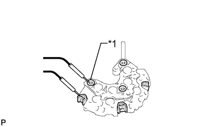

ГЕНЕРАТОР > ПРОВЕРКА |
| 1. INSPECT GENERATOR ROTOR ASSEMBLY |
Check the generator rotor for an open circuit.
 |
Measure the resistance according to the value(s) in the table below.
| Tester Connection | Condition | Specified Condition |
| Slip ring - Slip ring | 20°C (68°F) | 2.1 to 2.5 Ω |
| *1 | Slip Ring |
Check if the generator rotor is grounded.
Measure the resistance according to the value(s) in the table below.
| Tester Connection | Condition | Specified Condition |
| Slip ring - Rotor core | Always | 10 kΩ or higher |
| *1 | Slip Ring |
| *2 | Rotor Core |
Check that the slip rings are not rough or scored.
If they are rough or scored, replace the generator rotor assembly.
Using a vernier caliper, measure the slip ring diameter.
| *1 | Diameter |
Inspect the bearing.
Check that the bearing is not rough or worn.
If necessary, replace the generator rotor assembly.
| 2. INSPECT DRIVE END FRAME |
Check the stator for an open circuit.
Measure the resistance according to the value(s) in the table below.
| Tester Connection | Condition | Specified Condition |
| Coil lead - Coil lead | Always | Below 1 Ω |
| *1 | Coil Lead |
Check the stator for a short circuit.
Measure the resistance according to the value(s) in the table below.
| Tester Connection | Condition | Specified Condition |
| Coil lead - Drive end frame | Always | 10 kΩ or higher |
| *1 | Coil Lead |
| *2 | Drive End Frame |
Inspect the bearing.
Check that the bearing is not rough or worn.
If necessary, replace the generator assembly.
| 3. INSPECT BRUSH HOLDER |
Using a vernier caliper, measure the exposed brush length.
| *1 | Length |
| 4. INSPECT GENERATOR HOLDER WITH RECTIFIER |
Check the positive terminal of the rectifier.
| *1 | Positive (+) Terminal |
| *2 | Rectifier Terminal |
Using an ohmmeter, connect one tester probe to the positive (+) terminal and the other to each rectifier terminal.
Reverse the polarity of the tester probes and repeat the step above.
Check that one polarity shows a resistance of below 1 Ω and the other shows a resistance of 10 kΩ or higher.
If the result is not as specified, replace the generator holder with rectifier.
|  |
Check the negative terminal of the rectifier.
| *1 | Negative (-) Terminal |
Using an ohmmeter, connect one tester probe to the negative (-) terminal and the other to each rectifier terminal.
Reverse the polarity of the tester probes and repeat the step above.
Check that one polarity shows a resistance of below 1 Ω and the other shows a resistance of 10 kΩ or higher.
If the result is not as specified, replace the generator holder with rectifier.
| 5. INSPECT GENERATOR REGULATOR ASSEMBLY |
 |
Measure the resistance according to the value(s) in the table below.
| Tester Connection | Condition | Specified Condition |
| Terminal F - Terminal B | Always | Below 1 Ω or higher than 10 kΩ |
| *1 | Terminal F |
| *2 | Terminal B |
Measure the resistance according to the value(s) in the table below.
| Tester Connection | Condition | Specified Condition |
| Terminal F - Terminal E | Always | Below 1 Ω or higher than 10 kΩ |
| *1 | Terminal F |
| *2 | Terminal E |